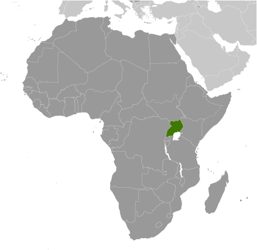
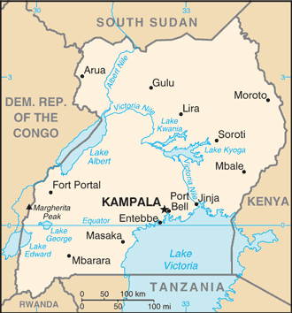
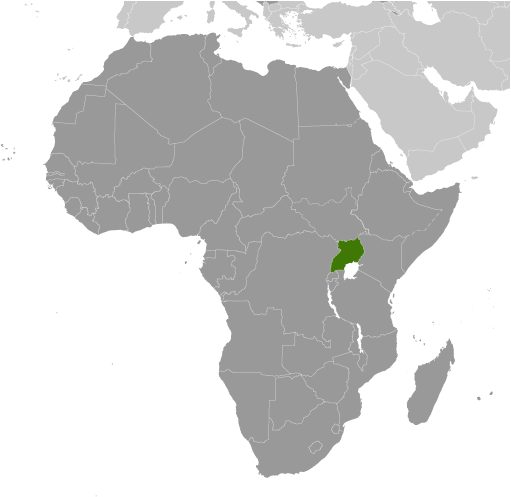
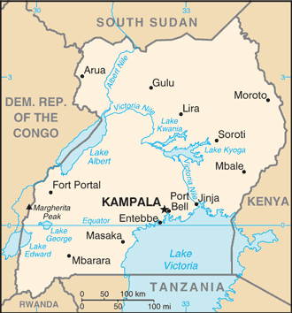

-
Introduction :: Uganda
-
Background:The colonial boundaries created by Britain to delimit Uganda grouped together a wide range of ethnic groups with different political systems and cultures. These differences complicated the establishment of a working political community after independence was achieved in 1962. The dictatorial regime of Idi AMIN (1971-79) was responsible for the deaths of some 300,000 opponents; guerrilla war and human rights abuses under Milton OBOTE (1980-85) claimed at least another 100,000 lives. The rule of Yoweri MUSEVENI since 1986 has brought relative stability and economic growth to Uganda. In December 2017, parliament approved the removal of presidential age limits, thereby making it possible for MUSEVENI to continue standing for office.
-
Geography :: Uganda
-
Location:East-Central Africa, west of Kenya, east of the Democratic Republic of the CongoGeographic coordinates:1 00 N, 32 00 EMap references:AfricaArea:total: 241,038 sq kmland: 197,100 sq kmwater: 43,938 sq kmcountry comparison to the world: 82Area - comparative:slightly more than two times the size of Pennsylvania; slightly smaller than OregonLand boundaries:total: 2,729 kmborder countries (5): Democratic Republic of the Congo 877 km, Kenya 814 km, Rwanda 172 km, South Sudan 475 km, Tanzania 391 kmCoastline:0 km (landlocked)Maritime claims:none (landlocked)Climate:tropical; generally rainy with two dry seasons (December to February, June to August); semiarid in northeastTerrain:mostly plateau with rim of mountainsElevation:614 m lowest point: Albert Nile5110 highest point: Margherita Peak on Mount StanleyNatural resources:copper, cobalt, hydropower, limestone, salt, arable land, goldLand use:agricultural land: 71.2% (2011 est.)arable land: 34.3% (2011 est.) / permanent crops: 11.3% (2011 est.) / permanent pasture: 25.6% (2011 est.)forest: 14.5% (2011 est.)other: 14.3% (2011 est.)Irrigated land:140 sq km (2012)Population distribution:population density is relatively high in comparison to other African nations; most of the population is concentrated in the central and southern parts of the country, particularly along the shores of Lake Victoria and Lake Albert; the northeast is least populatedNatural hazards:droughts; floods; earthquakes; landslides; hailstormsEnvironment - current issues:draining of wetlands for agricultural use; deforestation; overgrazing; soil erosion; water pollution from industrial discharge and water hyacinth infestation in Lake Victoria; widespread poachingEnvironment - international agreements:party to: Biodiversity, Climate Change, Climate Change-Kyoto Protocol, Desertification, Endangered Species, Hazardous Wastes, Law of the Sea, Marine Life Conservation, Ozone Layer Protection, Wetlandssigned, but not ratified: Environmental ModificationGeography - note:landlocked; fertile, well-watered country with many lakes and rivers
-
People and Society :: Uganda
-
Population:40,853,749 (July 2018 est.)
note: estimates for this country explicitly take into account the effects of excess mortality due to AIDS; this can result in lower life expectancy, higher infant mortality, higher death rates, lower population growth rates, and changes in the distribution of population by age and sex than would otherwise be expected
country comparison to the world: 35Nationality:noun: Ugandan(s)adjective: UgandanEthnic groups:Baganda 16.5%, Banyankole 9.6%, Basoga 8.8%, Bakiga 7.1%, Iteso 7%, Langi 6.3%, Bagisu 4.9%, Acholi 4.4%, Lugbara 3.3%, other 32.1% (2014 est.)Languages:English (official national language, taught in grade schools, used in courts of law and by most newspapers and some radio broadcasts), Ganda or Luganda (most widely used of the Niger-Congo languages, preferred for native language publications in the capital and may be taught in school), other Niger-Congo languages, Nilo-Saharan languages, Swahili, ArabicReligions:Protestant 45.1% (Anglican 32.0%, Pentecostal/Born Again/Evangelical 11.1%, Seventh Day Adventist 1.7%, Baptist .3%), Roman Catholic 39.3%, Muslim 13.7%, other 1.6%, none 0.2% (2014 est.)Demographic profile:Uganda has one of the youngest and most rapidly growing populations in the world; its total fertility rate is among the world’s highest at 5.8 children per woman. Except in urban areas, actual fertility exceeds women’s desired fertility by one or two children, which is indicative of the widespread unmet need for contraception, lack of government support for family planning, and a cultural preference for large families. High numbers of births, short birth intervals, and the early age of childbearing contribute to Uganda’s high maternal mortality rate. Gender inequities also make fertility reduction difficult; women on average are less-educated, participate less in paid employment, and often have little say in decisions over childbearing and their own reproductive health. However, even if the birth rate were significantly reduced, Uganda’s large pool of women entering reproductive age ensures rapid population growth for decades to come.
Unchecked, population increase will further strain the availability of arable land and natural resources and overwhelm the country’s limited means for providing food, employment, education, health care, housing, and basic services. The country’s north and northeast lag even further behind developmentally than the rest of the country as a result of long-term conflict (the Ugandan Bush War 1981-1986 and more than 20 years of fighting between the Lord’s Resistance Army (LRA) and Ugandan Government forces), ongoing inter-communal violence, and periodic natural disasters.
Uganda has been both a source of refugees and migrants and a host country for refugees. In 1972, then President Idi AMIN, in his drive to return Uganda to Ugandans, expelled the South Asian population that composed a large share of the country’s business people and bankers. Since the 1970s, thousands of Ugandans have emigrated, mainly to southern Africa or the West, for security reasons, to escape poverty, to search for jobs, and for access to natural resources. The emigration of Ugandan doctors and nurses due to low wages is a particular concern given the country’s shortage of skilled health care workers. Africans escaping conflicts in neighboring states have found refuge in Uganda since the 1950s; the country currently struggles to host tens of thousands from the Democratic Republic of the Congo, South Sudan, and other nearby countries.
Age structure:0-14 years: 47.84% (male 9,753,880 /female 9,789,455)15-24 years: 21.04% (male 4,250,222 /female 4,347,313)25-54 years: 26.52% (male 5,422,096 /female 5,412,112)55-64 years: 2.64% (male 522,637 /female 554,287)65 years and over: 1.96% (male 351,481 /female 450,266) (2018 est.)population pyramid: The World Factbook Field Image ModalAfrica :: Uganda Print
The World Factbook Field Image ModalAfrica :: Uganda Print Image DescriptionThis is the population pyramid for Uganda. A population pyramid illustrates the age and sex structure of a country's population and may provide insights about political and social stability, as well as economic development. The population is distributed along the horizontal axis, with males shown on the left and females on the right. The male and female populations are broken down into 5-year age groups represented as horizontal bars along the vertical axis, with the youngest age groups at the bottom and the oldest at the top. The shape of the population pyramid gradually evolves over time based on fertility, mortality, and international migration trends.
Image DescriptionThis is the population pyramid for Uganda. A population pyramid illustrates the age and sex structure of a country's population and may provide insights about political and social stability, as well as economic development. The population is distributed along the horizontal axis, with males shown on the left and females on the right. The male and female populations are broken down into 5-year age groups represented as horizontal bars along the vertical axis, with the youngest age groups at the bottom and the oldest at the top. The shape of the population pyramid gradually evolves over time based on fertility, mortality, and international migration trends.
For additional information, please see the entry for Population pyramid on the Definitions and Notes page under the References tab.Dependency ratios:total dependency ratio: 101.6 (2015 est.)youth dependency ratio: 97.2 (2015 est.)elderly dependency ratio: 4.4 (2015 est.)potential support ratio: 22.8 (2015 est.)Median age:total: 15.9 yearsmale: 15.8 yearsfemale: 16 years (2018 est.)country comparison to the world: 225Population growth rate:3.18% (2018 est.)country comparison to the world: 6Birth rate:42.4 births/1,000 population (2018 est.)country comparison to the world: 5Death rate:9.9 deaths/1,000 population (2018 est.)country comparison to the world: 40Net migration rate:-0.7 migrant(s)/1,000 population (2017 est.)country comparison to the world: 130Population distribution:population density is relatively high in comparison to other African nations; most of the population is concentrated in the central and southern parts of the country, particularly along the shores of Lake Victoria and Lake Albert; the northeast is least populatedUrbanization:urban population: 23.8% of total population (2018)rate of urbanization: 5.7% annual rate of change (2015-20 est.)Major urban areas - population:2.986 million KAMPALA (capital) (2018)Sex ratio:at birth: 1.02 male(s)/female (2017 est.)0-14 years: 1 male(s)/female (2017 est.)15-24 years: 0.98 male(s)/female (2017 est.)25-54 years: 1 male(s)/female (2017 est.)55-64 years: 0.93 male(s)/female (2017 est.)65 years and over: 0.79 male(s)/female (2017 est.)total population: 0.99 male(s)/female (2017 est.)Mother's mean age at first birth:18.9 years (2011 est.)note: median age at first birth among women 25-29
Maternal mortality rate:343 deaths/100,000 live births (2015 est.)country comparison to the world: 36Infant mortality rate:total: 54.6 deaths/1,000 live births (2018 est.)male: 63.3 deaths/1,000 live births (2018 est.)female: 45.7 deaths/1,000 live births (2018 est.)country comparison to the world: 22Life expectancy at birth:total population: 56.3 years (2018 est.)male: 54.8 years (2018 est.)female: 57.8 years (2018 est.)country comparison to the world: 217Total fertility rate:5.62 children born/woman (2018 est.)country comparison to the world: 7Contraceptive prevalence rate:38.4% (2017)Health expenditures:7.2% of GDP (2014)country comparison to the world: 78Physicians density:0.09 physicians/1,000 population (2015)Hospital bed density:0.5 beds/1,000 population (2010)Drinking water source:improved: urban: 95.5% of populationrural: 75.8% of populationtotal: 79% of populationunimproved: urban: 4.5% of populationrural: 24.2% of populationtotal: 21% of population (2015 est.)Sanitation facility access:improved: urban: 28.5% of population (2015 est.)rural: 17.3% of population (2015 est.)total: 19.1% of population (2015 est.)unimproved: urban: 71.5% of population (2015 est.)rural: 82.7% of population (2015 est.)total: 80.9% of population (2015 est.)HIV/AIDS - adult prevalence rate:5.9% (2017 est.)country comparison to the world: 11HIV/AIDS - people living with HIV/AIDS:1.3 million (2017 est.)country comparison to the world: 7HIV/AIDS - deaths:26,000 (2017 est.)country comparison to the world: 8Major infectious diseases:degree of risk: very high (2016)food or waterborne diseases: bacterial diarrhea, hepatitis A and E, and typhoid fever (2016)vectorborne diseases: malaria, dengue fever, and trypanosomiasis-Gambiense (African sleeping sickness) (2016)water contact diseases: schistosomiasis (2016)animal contact diseases: rabies (2016)Obesity - adult prevalence rate:5.3% (2016)country comparison to the world: 181Children under the age of 5 years underweight:10.5% (2016)country comparison to the world: 61Education expenditures:2.3% of GDP (2014)country comparison to the world: 169Literacy:definition: age 15 and over can read and write (2015 est.)total population: 78.4% (2015 est.)male: 85.3% (2015 est.)female: 71.5% (2015 est.)School life expectancy (primary to tertiary education):total: 10 years (2011)male: 10 years (2011)female: 10 years (2011)Unemployment, youth ages 15-24:total: 2.6% (2013 est.)male: 2% (2013 est.)female: 3.2% (2013 est.)country comparison to the world: 166 -
Government :: Uganda
-
Country name:conventional long form: Republic of Ugandaconventional short form: Ugandaetymology: from the name "Buganda," adopted by the British as the designation for their East African colony in 1894; Buganda had been a powerful East African state during the 18th and 19th centuriesGovernment type:presidential republicCapital:name: Kampalageographic coordinates: 0 19 N, 32 33 Etime difference: UTC+3 (8 hours ahead of Washington, DC, during Standard Time)Administrative divisions:121 districts and 1 capital city*; Abim, Adjumani, Agago, Alebtong, Amolatar, Amudat, Amuria, Amuru, Apac, Arua, Budaka, Bududa, Bugiri, Buhweju, Buikwe, Bukedea, Bukomansimbi, Bukwa, Bulambuli, Buliisa, Bundibugyo, Bunyangabu, Bushenyi, Busia, Butaleja, Butambala, Butebo, Buvuma, Buyende, Dokolo, Gomba, Gulu, Hoima, Ibanda, Iganga, Isingiro, Jinja, Kaabong, Kabale, Kabarole, Kaberamaido, Kagadi, Kakumiro, Kalangala, Kaliro, Kalungu, Kampala*, Kamuli, Kamwenge, Kanungu, Kapchorwa, Kasese, Katakwi, Kayunga, Kibaale, Kiboga, Kibuku, Kiruhura, Kiryandongo, Kisoro, Kitgum, Koboko, Kole, Kotido, Kumi, Kween, Kyankwanzi, Kyegegwa, Kyenjojo, Kyotera, Lamwo, Lira, Luuka, Luwero, Lwengo, Lyantonde, Manafwa, Maracha, Masaka, Masindi, Mayuge, Mbale, Mbarara, Mitooma, Mityana, Moroto, Moyo, Mpigi, Mubende, Mukono, Nakapiripirit, Nakaseke, Nakasongola, Namayingo, Namisindwa, Namutumba, Napak, Nebbi, Ngora, Ntoroko, Ntungamo, Nwoya, Omoro, Otuke, Oyam, Pader, Pakwach, Pallisa, Rakai, Rubanda, Rubirizi, Rukiga, Rukungiri, Sembabule, Serere, Sheema, Sironko, Soroti, Tororo, Wakiso, Yumbe, ZomboIndependence:9 October 1962 (from the UK)National holiday:Independence Day, 9 October (1962)Constitution:history: several previous; latest adopted 27 September 1995, promulgated 8 October 1995 (2018)amendments: proposed by the National Assembly; passage requires at least two-thirds majority vote of the Assembly membership in the second and third readings; proposals affecting "entrenched clauses" including the sovereignty of the people, supremacy of the constitution, human rights and freedoms, the democratic and multiparty form of government, presidential term of office, independence of the judiciary, and the institutions of traditional or cultural leaders also requires passage by referendum, ratification by at least two-thirds majority vote of district council members in at least two-thirds of Uganda's districts, and assent by the president of the republic; amended many times, last in 2017 (2018)Legal system:mixed legal system of English common law and customary lawInternational law organization participation:accepts compulsory ICJ jurisdiction; accepts ICCt jurisdictionCitizenship:citizenship by birth: nocitizenship by descent only: at least one parent or grandparent must be a native-born citizen of Ugandadual citizenship recognized: yesresidency requirement for naturalization: an aggregate of 20 years and continuously for the last 2 years prior to applying for citizenshipSuffrage:18 years of age; universalJudicial branch:highest courts: Supreme Court of Uganda (consists of the chief justice and at least 6 justices)judge selection and term of office: justices appointed by the president of the republic in consultation with the Judicial Service Commission, an 8-member independent advisory body, and approved by the National Assembly; justices serve until mandatory retirement at age 70subordinate courts: Court of Appeal (also acts as the Constitutional Court); High Court (includes 12 High Court Circuits and 8 High Court Divisions); Industrial Court; Chief Magistrate Grade One and Grade Two Courts throughout the country; qadhis courts; local council courts; family and children courtsExecutive branch:head of government: President Yoweri Kaguta MUSEVENI (since seizing power on 26 January 1986); Vice President Edward SSEKANDI (since 24 May 2011); Prime Minister Ruhakana RUGUNDA (since 19 September 2014); First Deputy Prime Minister Moses ALI (since 6 June 2016); Second Deputy Prime Minister Kirunda KIVEJINJA (since 6 June 2016)cabinet: Cabinet appointed by the president from among elected members of the National Assembly or persons who qualify to be elected as members of the National Assemblyelections/appointments: president directly elected by absolute majority popular vote in 2 rounds if needed for a 5-year term (no term limits); election last held on 18 February 2016 (next to be held in 2021)election results: Yoweri Kaguta MUSEVENI reelected president in the first round; percent of vote - Yoweri Kaguta MUSEVENI (NRM) 60.6%, Kizza BESIGYE (FDC) 35.6%, other 3.8%head of state: President Yoweri Kaguta MUSEVENI (since seizing power on 26 January 1986); Vice President Edward SSEKANDI (since 24 May 2011); note - the president is both head of state and head of governmentLegislative branch:description: unicameral National Assembly or Parliament (445 seats; 290 members directly elected in single-seat constituencies by simple majority vote, 112 for women directly elected in single-seat districts by simple majority vote, and 25 "representatives" reserved for special interest groups - army 10, disabled 5, youth 5, labor 5; up to 18 ex officio members appointed by the president; members serve 5-year terms)elections: last held on 18 February 2016 (next to be held in 2021)election results: percent of vote by party - NA; seats by party - NRM 292, FDC 37, DP 5, UPDF 10, UPC 6, independent 66 (excludes 19 ex-officio members)Political parties and leaders:Conservative Party or CP [Ken LUKYAMUZI]
Democratic Party or DP [Norbert MAO]
Forum for Democratic Change or FDC [Patrick Oboi AMURIAT]
Justice Forum or JEEMA [Asuman BASALIRWA]
National Resistance Movement or NRM [Yoweri MUSEVENI]
Uganda People's Congress or UPC [James AKENA]International organization participation:ACP, AfDB, AU, C, COMESA, EAC, EADB, FAO, G-77, IAEA, IBRD, ICAO, ICC (national committees), ICCt, IDA, IDB, IFAD, IFC, IFRCS, IGAD, ILO, IMF, IMO, Interpol, IOC, IOM, IPU, ISO (correspondent), ITSO, ITU, ITUC (NGOs), MIGA, NAM, OIC, OPCW, PCA, UN, UNCTAD, UNESCO, UNHCR, UNIDO, UNOCI, UNWTO, UPU, WCO, WFTU (NGOs), WHO, WIPO, WMO, WTODiplomatic representation in the US:chief of mission: Ambassador Mull Sebujja KATENDE (since 8 September 2017)chancery: 5911 16th Street NW, Washington, DC 20011telephone: [1] (202) 726-7100 through 7102, 0416FAX: [1] (202) 726-1727Diplomatic representation from the US:chief of mission: Ambassador Deborah R. MALAC (since 27 February 2016)embassy: 1577 Ggaba Road, Kampalamailing address: P.O. Box 7007, Kampalatelephone: [256] 414-306001FAX: [256] 414-306-009Flag description:six equal horizontal bands of black (top), yellow, red, black, yellow, and red; a white disk is superimposed at the center and depicts a grey crowned crane (the national symbol) facing the hoist side; black symbolizes the African people, yellow sunshine and vitality, red African brotherhood; the crane was the military badge of Ugandan soldiers under the UKNational symbol(s):grey crowned crane; national colors: black, yellow, redNational anthem:name: Oh Uganda, Land of Beauty!lyrics/music: George Wilberforce KAKOMOAnote: adopted 1962
-
Economy :: Uganda
-
Economy - overview:
Uganda has substantial natural resources, including fertile soils, regular rainfall, substantial reserves of recoverable oil, and small deposits of copper, gold, and other minerals. Agriculture is one of the most important sectors of the economy, employing 72% of the work force. The country’s export market suffered a major slump following the outbreak of conflict in South Sudan, but has recovered lately, largely due to record coffee harvests, which account for 16% of exports, and increasing gold exports, which account for 10% of exports. Uganda has a small industrial sector that is dependent on imported inputs such as refined oil and heavy equipment. Overall, productivity is hampered by a number of supply-side constraints, including insufficient infrastructure, lack of modern technology in agriculture, and corruption.
Uganda’s economic growth has slowed since 2016 as government spending and public debt has grown. Uganda’s budget is dominated by energy and road infrastructure spending, while Uganda relies on donor support for long-term drivers of growth, including agriculture, health, and education. The largest infrastructure projects are externally financed through concessional loans, but at inflated costs. As a result, debt servicing for these loans is expected to rise.
Oil revenues and taxes are expected to become a larger source of government funding as oil production starts in the next three to 10 years. Over the next three to five years, foreign investors are planning to invest $9 billion in production facilities projects, $4 billion in an export pipeline, as well as in a $2-3 billion refinery to produce petroleum products for the domestic and East African Community markets. Furthermore, the government is looking to build several hundred million dollars’ worth of highway projects to the oil region.
Uganda faces many economic challenges. Instability in South Sudan has led to a sharp increase in Sudanese refugees and is disrupting Uganda's main export market. Additional economic risks include: poor economic management, endemic corruption, and the government’s failure to invest adequately in the health, education, and economic opportunities for a burgeoning young population. Uganda has one of the lowest electrification rates in Africa - only 22% of Ugandans have access to electricity, dropping to 10% in rural areas.
GDP (purchasing power parity):$89.19 billion (2017 est.)$85.07 billion (2016 est.)$83.14 billion (2015 est.)note: data are in 2017 dollars
country comparison to the world: 89GDP (official exchange rate):$26.62 billion (2017 est.) (2017 est.)GDP - real growth rate:4.8% (2017 est.)2.3% (2016 est.)5.7% (2015 est.)country comparison to the world: 59GDP - per capita (PPP):$2,400 (2017 est.)$2,300 (2016 est.)$2,300 (2015 est.)note: data are in 2017 dollars
country comparison to the world: 200Gross national saving:20.6% of GDP (2017 est.)21.5% of GDP (2016 est.)17.7% of GDP (2015 est.)country comparison to the world: 93GDP - composition, by end use:household consumption: 74.3% (2017 est.)government consumption: 8% (2017 est.)investment in fixed capital: 23.9% (2017 est.)investment in inventories: 0.3% (2017 est.)exports of goods and services: 18.8% (2017 est.)imports of goods and services: -25.1% (2017 est.)GDP - composition, by sector of origin:agriculture: 28.2% (2017 est.)industry: 21.1% (2017 est.)services: 50.7% (2017 est.)Agriculture - products:coffee, tea, cotton, tobacco, cassava (manioc, tapioca), potatoes, corn, millet, pulses, cut flowers; beef, goat meat, milk, poultry, and fishIndustries:sugar processing, brewing, tobacco, cotton textiles; cement, steel productionIndustrial production growth rate:4.4% (2017 est.)country comparison to the world: 69Labor force:15.84 million (2015 est.)country comparison to the world: 38Labor force - by occupation:agriculture: 71%industry: 7%services: 22% (2013 est.)Unemployment rate:9.4% (2014 est.)country comparison to the world: 137Population below poverty line:21.4% (2017 est.)Distribution of family income - Gini index:39.5 (2013)45.7 (2002)country comparison to the world: 71Budget:revenues: 3.848 billion (2017 est.)expenditures: 4.928 billion (2017 est.)Taxes and other revenues:14.5% (of GDP) (2017 est.)country comparison to the world: 199Budget surplus (+) or deficit (-):-4.1% (of GDP) (2017 est.)country comparison to the world: 158Public debt:40% of GDP (2017 est.)37.4% of GDP (2016 est.)country comparison to the world: 127Fiscal year:1 July - 30 JuneInflation rate (consumer prices):5.6% (2017 est.)5.5% (2016 est.)country comparison to the world: 181Central bank discount rate:9% (February 2018)9.5% (December 2017)country comparison to the world: 34Commercial bank prime lending rate:21.28% (31 December 2017 est.)23.89% (31 December 2016 est.)country comparison to the world: 11Stock of narrow money:$2.519 billion (31 December 2017 est.)$2.167 billion (31 December 2016 est.)country comparison to the world: 127Stock of broad money:$2.519 billion (31 December 2017 est.)$2.167 billion (31 December 2016 est.)country comparison to the world: 134Stock of domestic credit:$4.297 billion (31 December 2017 est.)$3.989 billion (31 December 2016 est.)country comparison to the world: 132Current account balance:-$1.212 billion (2017 est.)-$707 million (2016 est.)country comparison to the world: 148Exports:$3.339 billion (2017 est.)$2.921 billion (2016 est.)country comparison to the world: 125Exports - partners:Kenya 17.7%, UAE 16.7%, Democratic Republic of the Congo 6.6%, Rwanda 6.1%, Italy 4.8% (2017)Exports - commodities:coffee, fish and fish products, tea, cotton, flowers, horticultural products; goldImports:$5.036 billion (2017 est.)$4.424 billion (2016 est.)country comparison to the world: 127Imports - commodities:capital equipment, vehicles, petroleum, medical supplies; cerealsImports - partners:China 17.4%, India 13.4%, UAE 12.2%, Kenya 7.9%, Japan 6.4%, Saudi Arabia 6.3%, Indonesia 4.4%, South Africa 4.1% (2017)Reserves of foreign exchange and gold:$3.654 billion (31 December 2017 est.)$3.034 billion (31 December 2016 est.)note: excludes gold
country comparison to the world: 101Debt - external:$10.8 billion (22 March 2018 est.)$11.54 billion (31 December 2017 est.)$6.241 billion (31 December 2016 est.)country comparison to the world: 112Stock of direct foreign investment - at home:$541 million (2017)NA
country comparison to the world: 128Stock of direct foreign investment - abroad:NA
Exchange rates:Ugandan shillings (UGX) per US dollar -3,695 (2017 est.)3,420.1 (2016 est.)3,420.1 (2015 est.)3,234.1 (2014 est.)2,599.8 (2013 est.) -
Energy :: Uganda
-
Electricity access:population without electricity: 32.1 million (2013)electrification - total population: 22% (2013)electrification - urban areas: 55% (2013)electrification - rural areas: 10% (2013)Electricity - production:3.463 billion kWh (2016 est.)country comparison to the world: 130Electricity - consumption:3.106 billion kWh (2016 est.)country comparison to the world: 135Electricity - exports:121 million kWh (2015 est.)country comparison to the world: 81Electricity - imports:50 million kWh (2016 est.)country comparison to the world: 107Electricity - installed generating capacity:1.02 million kW (2016 est.)country comparison to the world: 127Electricity - from fossil fuels:19% of total installed capacity (2016 est.)country comparison to the world: 195Electricity - from nuclear fuels:0% of total installed capacity (2017 est.)country comparison to the world: 203Electricity - from hydroelectric plants:68% of total installed capacity (2017 est.)country comparison to the world: 19Electricity - from other renewable sources:12% of total installed capacity (2017 est.)country comparison to the world: 75Crude oil - production:0 bbl/day (2017 est.)country comparison to the world: 210Crude oil - exports:0 bbl/day (2015 est.)country comparison to the world: 211Crude oil - imports:0 bbl/day (2015 est.)country comparison to the world: 209Crude oil - proved reserves:2.5 billion bbl (1 January 2018 est.)country comparison to the world: 31Refined petroleum products - production:0 bbl/day (2015 est.)country comparison to the world: 212Refined petroleum products - consumption:32,000 bbl/day (2016 est.)country comparison to the world: 119Refined petroleum products - exports:0 bbl/day (2015 est.)country comparison to the world: 213Refined petroleum products - imports:31,490 bbl/day (2015 est.)country comparison to the world: 99Natural gas - production:0 cu m (2017 est.)country comparison to the world: 210Natural gas - consumption:0 cu m (2017 est.)country comparison to the world: 210Natural gas - exports:0 cu m (2017 est.)country comparison to the world: 205Natural gas - imports:0 cu m (2017 est.)country comparison to the world: 206Natural gas - proved reserves:14.16 billion cu m (1 January 2018 est.)country comparison to the world: 76Carbon dioxide emissions from consumption of energy:4.703 million Mt (2017 est.)country comparison to the world: 135
-
Communications :: Uganda
-
Telephones - fixed lines:total subscriptions: 262,286 (2017 est.)subscriptions per 100 inhabitants: 1 (2017 est.)country comparison to the world: 120Telephones - mobile cellular:total subscriptions: 24,948,878 (2017 est.)subscriptions per 100 inhabitants: 63 (2017 est.)country comparison to the world: 49Telephone system:general assessment: in recent years, telecommunications infrastructure has developed through private partnerships; private companies have laid over 1,800 km of fiber optics in Uganda since 2015; as of 2018, fixed fiber backbone infrastructure is available in over half of Uganda’s districts; mobile phone companies now provide 4G networks across all major cities and national parks, while offering 3G coverage in second-tier cities and most rural areas with road access; between 2016 and 2018, commercial Internet services dropped in price from $300/Mbps to $80/Mbps. (2018) (2018)domestic: intercity traffic by wire, microwave radio relay, and radiotelephone communication stations, fixed-line and mobile- cellular systems for short-range traffic; mobile-cellular teledensity about 65 per 100 persons (September 2017) (2018)international: country code - 256; satellite earth stations - 1 Intelsat (Atlantic Ocean) and 1 Inmarsat; analog and digital links to Kenya and Tanzania (2018)Broadcast media:public broadcaster, Uganda Broadcasting Corporation (UBC), operates radio and TV networks; 31 Free-To-Air (FTA) TV stations, 2 digital terrestrial TV stations, 3 cable TV stations, and 5 digital satellite TV stations; 258 operational FM stations (2017)Internet country code:.ugInternet users:total: 18,148,923 (September 2017)percent of population: 45.9% (September 2017)country comparison to the world: 36Broadband - fixed subscriptions:total: 145,765 (2017 est.)subscriptions per 100 inhabitants: less than 1 (2017 est.)country comparison to the world: 113
-
Transportation :: Uganda
-
National air transport system:number of registered air carriers: 1 (2015)inventory of registered aircraft operated by air carriers: 1 (2015)annual passenger traffic on registered air carriers: 41,812 (2015)annual freight traffic on registered air carriers: 23,472 mt-km (2015)Civil aircraft registration country code prefix:5X (2016)Airports:47 (2013)country comparison to the world: 94Airports - with paved runways:total: 5 (2013)over 3,047 m: 3 (2013)1,524 to 2,437 m: 1 (2013)914 to 1,523 m: 1 (2013)Airports - with unpaved runways:total: 42 (2013)over 3,047 m: 1 (2013)1,524 to 2,437 m: 8 (2013)914 to 1,523 m: 26 (2013)under 914 m: 7 (2013)Railways:total: 1,244 km (2014)narrow gauge: 1,244 km 1.000-m gauge (2014)country comparison to the world: 85Roadways:total: 20,544 km (excludes local roads) (2017)paved: 4,257 km (2017)unpaved: 16,287 km (2017)country comparison to the world: 108Waterways:(there are no long navigable stretches of river in Uganda; parts of the Albert Nile that flow out of Lake Albert in the northwestern part of the country are navigable; several lakes including Lake Victoria and Lake Kyoga have substantial traffic; Lake Albert is navigable along a 200-km stretch from its northern tip to its southern shores) (2011)Merchant marine:total: 1 (2017)by type: bulk carrier 1 (2017)country comparison to the world: 175Ports and terminals:lake port(s): Entebbe, Jinja, Port Bell (Lake Victoria)
-
Military and Security :: Uganda
-
Military expenditures:1.57% of GDP (2016)1.6% of GDP (2015)1.71% of GDP (2014)1.74% of GDP (2013)1.79% of GDP (2012)country comparison to the world: 71Military branches:Uganda People's Defense Force (UPDF): Land Forces (includes Marine Unit), Uganda Air Force (2013)Military service age and obligation:18-26 years of age for voluntary military duty; 18-30 years of age for professionals; no conscription; 9-year service obligation; the government has stated that while recruitment under 18 years of age could occur with proper consent, "no person under the apparent age of 18 years shall be enrolled in the armed forces"; Ugandan citizenship and secondary education required (2012)
-
Terrorism :: Uganda
-
Terrorist groups - foreign based:al-Shabaab:
aim(s): punish Ugandan Government for participating in African Union military operations against al-Shabaab; compel Uganda to withdraw forces from Somalia
area(s) of operation: aspires to renew attacks in Kampala; no permanent presence (April 2018) -
Transnational Issues :: Uganda
-
Disputes - international:Uganda is subject to armed fighting among hostile ethnic groups, rebels, armed gangs, militias, and various government forces that extend across its bordersUgandan refugees as well as members of the Lord's Resistance Army (LRA) seek shelter in southern Sudan and the Democratic Republic of the Congo's Garamba National ParkLRA forces have also attacked Kenyan villages across the borderRefugees and internally displaced persons:refugees (country of origin): 785,114 (South Sudan) (refugees and asylum seekers), 299,850 (Democratic Republic of the Congo) (refugees and asylum seekers), 33,657 (Burundi) (refugee and asylum seekers), 22,064 (Somalia) (refugees and asylum seekers), 14,313 (Rwanda) (refugees and asylum seekers), 8,854 (Eritrea) (2018)IDPs: 24,000 (displaced in northern Uganda because of fighting between government forces and the Lord's Resistance Army; as of 2011, most of the 1.8 million people displaced to IDP camps at the height of the conflict had returned home or resettled, but many had not found durable solutions; intercommunal violence and cattle raids) (2017)
Africa ::
Uganda